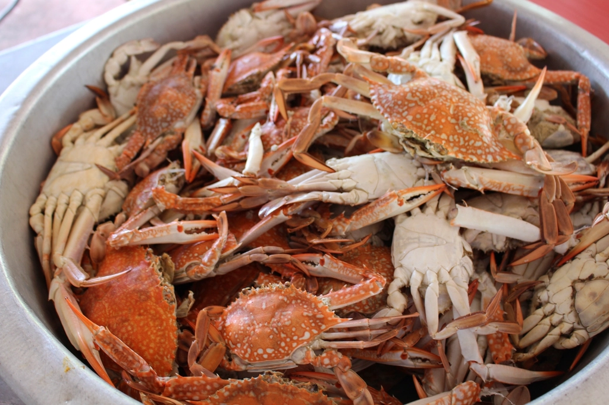
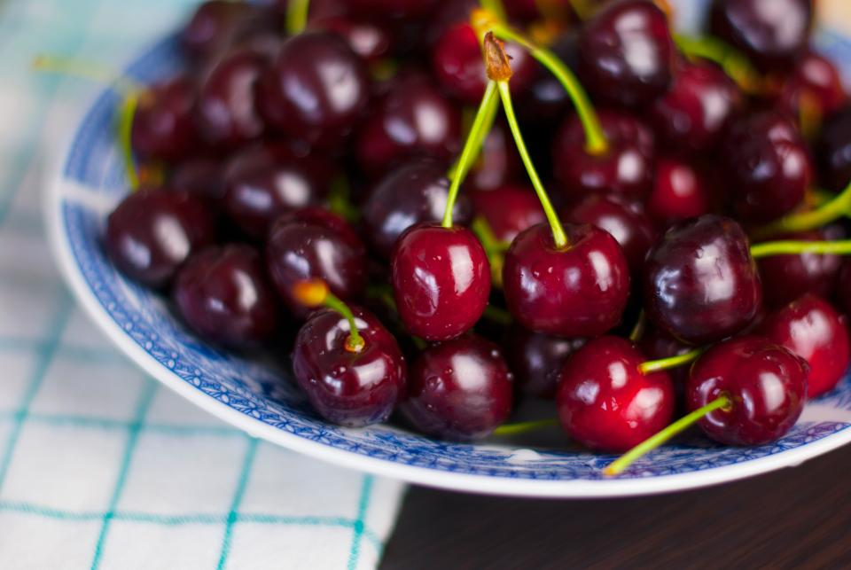

向かいの妙宣寺を「よければ見てきては」と案内してくださった心遣いが印象的でした。
— 東京から訪れた旅行者の声
Introduction
妙宣寺の向かいで、佐渡とフランスが出会う
新潟県佐渡市阿仏坊、妙宣寺の向かい側。小さな一軒のビストロで、フランス人オーナーシェフと佐渡育ちの奥様が、二人三脚で厨房とホールに立っています。佐渡の海で水揚げされるイクラやズワイ蟹、ムール貝、カレイ、タコ。庭先で育てる自家製ハーブと、自家飼育の鶏が産む卵。島で採れるもの、庭で育てたものを、フランス仕込みの手仕事でひと皿に仕立てるのが、ラ パゴッドの流儀です。
Ingredients
島と庭の恵み
横にスクロールしてご覧いただけます
庭の恵み

庭の恵み（自家飼育の鶏卵）
自家飼育の鶏が産む新鮮な卵は、オムレツやパスタ生地にそのまま活きています。素朴でいて、口に運ぶとしっかり卵の味がする。庭先から食卓までの近さが、この店らしさです。
海の恵み

海の恵み（佐渡産の魚介）
イクラ、ズワイ蟹、ムール貝、カレイ、タコ。佐渡の海で獲れた魚介を、手打ちパスタやムニエルでシンプルに。素材の味を活かした仕立てで、島の海の実感をそのまま皿にのせます。
ハーブと果実


ハーブと果実（自家製ハーブ・地元産サクランボ）
庭で育てる自家製ハーブを使ったオリジナルドリンクの一つが、地元産サクランボのソーダ。自然な色合いと、優しい甘みと香りが評判です。
Voice
訪れた方の声
フランス人のご主人と日本人の奥様で切り盛りされていて、佐渡産の食材にこだわっているとのことでした。
— 妙宣寺参拝帰りに立ち寄った方の声店内の雰囲気はヨーロッパ風で、暖かみがあり、居心地が良かったです。
— 一人旅で佐渡島を訪れた方の声
Reservation
佐渡旅のひと皿に、ラ パゴッドを
ご予約前にInstagramで営業状況をご確認のうえ、お電話にてご予約ください。
営業時間・定休日は現在確認中です。ご来店前にInstagramまたはお電話でご確認ください。
掲載中の一部の写真はフリー素材のイメージです。実際の店内・お料理写真は貴店ご提供のものに差し替えます。